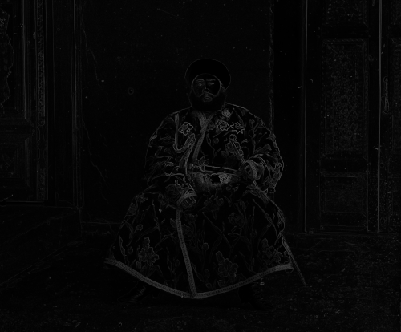
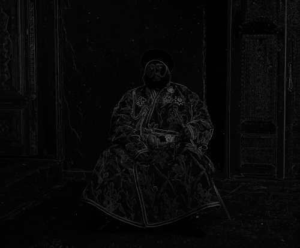
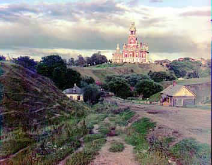
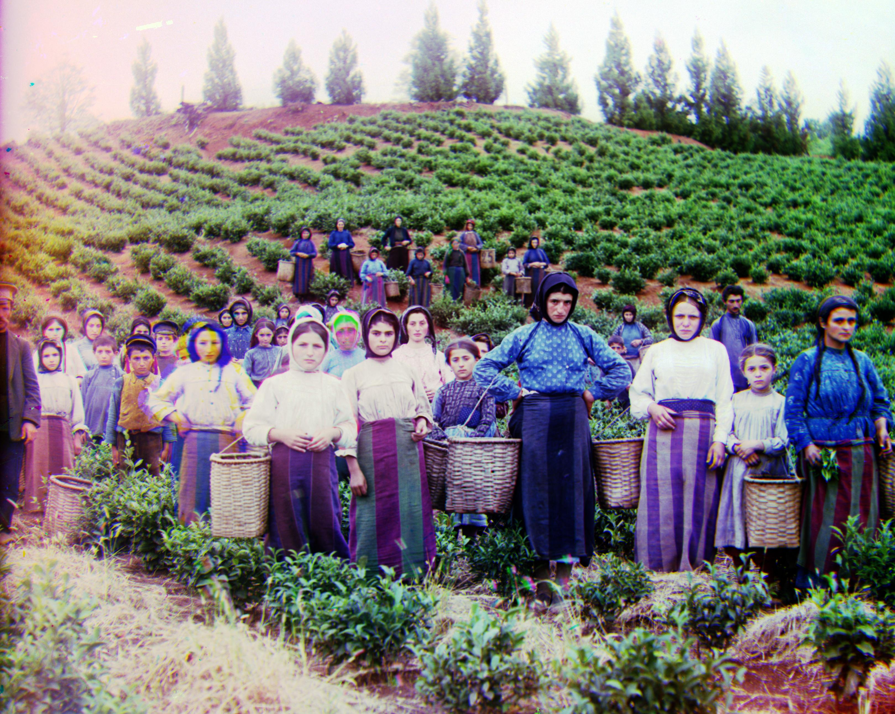
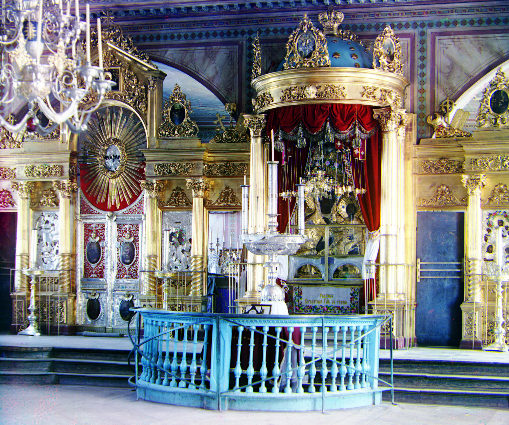
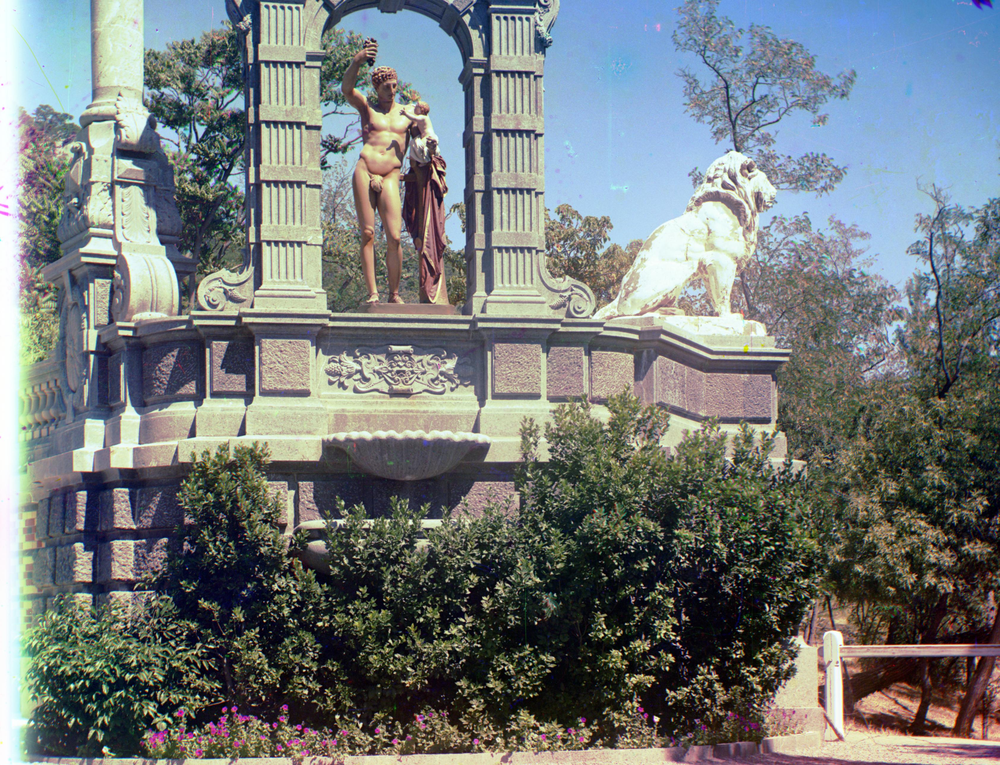
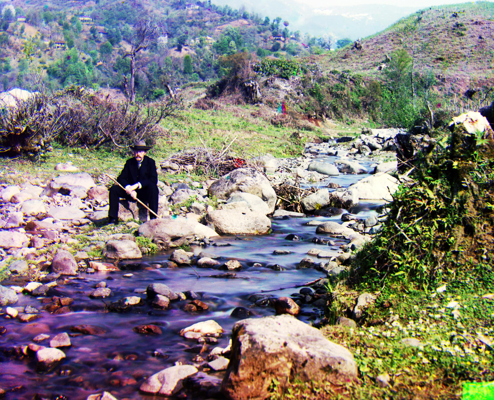
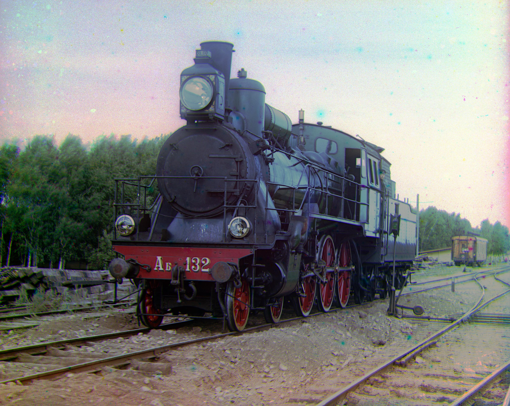
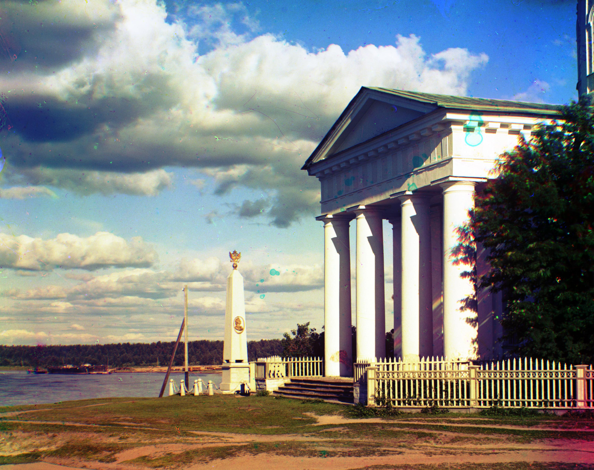
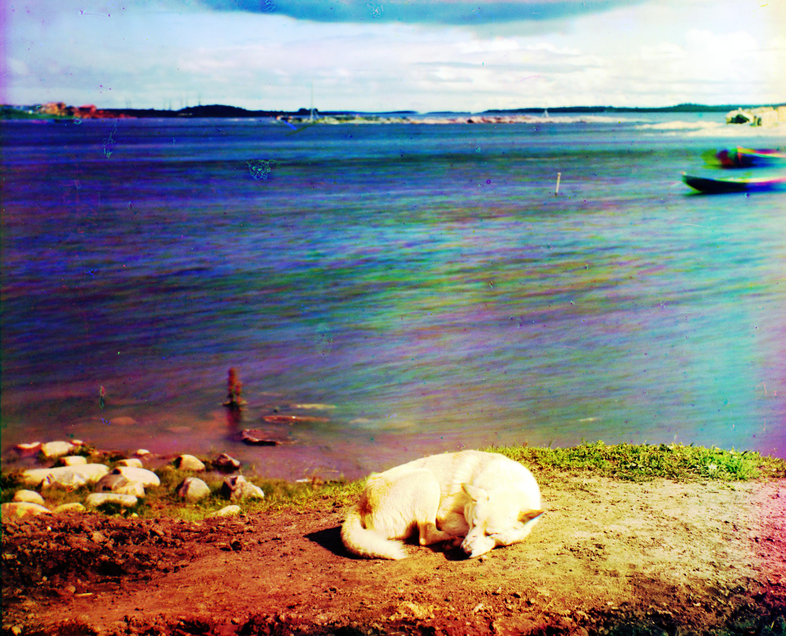

Overview
In 1907, Sergey Prokudin-Gorsky won the Tzar's special permission to travel across the Russian Empire to photograph what would become some of the very first color photos-- you can see the whole collection here. He did this by taking three exposures (with a red, green and blue filter respectively) for every scene. Together, these three exposures could be combined to reveal the true colors of the photograph. Below, I go over my program's implementation of this process.
Border Cropping
After each image is divided equally into it's three layer components, we first go about automatically cropping the boarders. First, a temporary 0.5 gamma correction is applied to each layer to bring out the differences of the boarder and then the horizontal and vertical gradients are calculated. Then, the greatest outermost rows and columns are trimmed if there is significant difference.
In some of the images, such as the Emir to the right and Church below, there are two borders: one due to the white 'ground' behind the plates and another of the actual black inner border. The first pass looks at the first 5% of the rows and columns from the edge, and the subsequent pass on the outermost 4.5% to ensure both of these are clipped.
 Original Blue Layer
Original Blue Layer
 0.5 Gamma Correction
0.5 Gamma Correction
 Pass 1
Pass 1
 Pass 2
Pass 2
Contrast Normalization
Next, each layer's contrast profile was normalized. This creates a uniform distribution, meaning that the full contrast range is present. Without this, many of the images appear more dull and the subsequent alignment algorithm performs worse. Original Red Layer
Original Red Layer
 Trimmed
Trimmed
 Normalized Contrast
Normalized Contrast
Alignment
Reference Channel
Each layer deviates slightly from one another so we cannot lazily stack the images. To go about solving this, first a reference channel is chosen that will serve to align the other two. For each image, the reference channel is chosen to be the one that was most different from the remaining two.Metric
Then, the alignment algorithm can be run on the other two layers. This algorithm shifts the input image around by some offset vector $\vec v$ and eventually returns the best offset that minimizes the difference between the two images. The metric used calculate the difference between two images is the Normalized Cross Correlation (NCC) of the input and reference image's vector representation (unrolled matrices).
$$\mathbf{G}_x = \begin{bmatrix} +1 & 0 & -1 \\ +2 & 0 & -2 \\ +1 & 0 & -1 \end{bmatrix} * \mathbf{A} \quad \mbox{and} \quad \mathbf{G}_y = \begin{bmatrix} +1 & +2 & +1\\ 0 & 0 & 0 \\ -1 & -2 & -1 \end{bmatrix} * \mathbf{A}$$ $$\mathbf{G} = \sqrt{ {\mathbf{G}_x}^2 + {\mathbf{G}_y}^2 }$$  Red Edge  Green Edge Blue Edge
Optimization
NCC involves comparing every vector entry (pixel) of the two images to one another. For large images, this becomes very slow and is made worse by the fact that we have to calculate the NCC for every possible offset vector $\vec v$ we test.
The solution to this is to use an image pyramid. This takes advantage of the fact that our comparison metric holds up reasonably well at lower resolutions of the images. As such, the algorithm downscales the input and reference image by a factor of 2 until both are smaller than a constant $64 \times 64$ number of pixels. At this base-case, the best (again, by measure of NCC) offset vector $\vec v \in [-7, 7] \times [-7, 7]$ is found and returned to the prior level of recursion. At each level, the offset vector is scaled up by a factor of 2; however, we now only have to test the offsets in the space $[-1, 1]\times [-1,1]$ around the doubled vector! This process repeats until at the original scale.
Notice how we only consider a large space when operating with the smallest image scale, and at every
other level only search a $3 \times 3$ square. In effect, we have $\log_2 (\text{max}(m, n))$ levels
of recursion, each of which involve 9 calls to NCC which is proportional to the input dimensions.
Since the input dimensions are halved each time, we do $\mathcal O \left(mn \left(1 + \frac 1 2 +
\frac 1 4 + \frac 1 8 + \dots \right)\right) = \mathcal O (mn)$ work total. Disappointingly, this is
the same complexity as a naive algorithm that searches a large space without downscaling; however in
practice the pyramid algorithm takes
~4-7 seconds to complete compared to the ~400 seconds to
search
over $[-25,25] \times [-25, 25]$ (which isn't even the full range of possible offsets!). This is
because the full-size .tif images have $m, n \approx 3,000$ pixels after the initial
border-cropping.
Outcomes
After the offsets are found, then the layers are combined to form a single image that look like those displayed below. I had also experimented with a few different noise-reducing algorithms such as total variation. However, I was not able to find a good one that didn't remove the artifacts without also taking away many of the fine details -- I believe it wouldn't remain faithful to the original photographs. After all, we have enough perfect images nowadays.
Cathedral: Reference: Green, $\vec v_\text{blue} = [-5, -2],\ \vec v_\text{red} = [7, 1]$ 
Church: Reference: Green, $\vec v_\text{blue} = [-25, -4],\ \vec v_\text{red} = [33, -8]$
Emir: Reference: Green, $\vec v_\text{blue} = [-49, -24],\ \vec v_\text{red} = [58, 17]$
Harvesters: Reference: Green, $\vec v_\text{blue} = [-59, -17],\ \vec v_\text{red} = [64, -3]$ 
Icon: Reference: Green, $\vec v_\text{blue} = [-39, -17],\ \vec v_\text{red} = [48, 5]$ 
Lady: Reference: Green, $\vec v_\text{blue} = [-55, -9],\ \vec v_\text{red} = [63, 4]$
Melons: Reference: Green, $\vec v_\text{blue} = [-83, -11],\ \vec v_\text{red} = [96, 3]$
Monastery: Reference: Green, $\vec v_\text{blue} = [3, -2],\ \vec v_\text{red} = [6, 1]$
Onion Church: Reference: Green, $\vec v_\text{blue} = [-52, -26],\ \vec v_\text{red} = [58, 10]$
Sculpture: Reference: Blue, $\vec v_\text{red} = [140, -27],\ \vec v_\text{green} = [33, -11]$ 
Self Portrait: Reference: Green, $\vec v_\text{blue} = [-79, -30],\ \vec v_\text{red} = [98, 8]$ 
Three Generations: Reference: Green, $\vec v_\text{blue} = [-51, -13],\ \vec v_\text{red} = [58, -1]$
Tobolsk: Reference: Green, $\vec v_\text{blue} = [-3, -3],\ \vec v_\text{red} = [4, 1]$
Train: Reference: Green, $\vec v_\text{blue} = [-42, -7],\ \vec v_\text{red} = [43, 26]$ 
Custom 1: Reference: Green, $\vec v_\text{blue} = [-64, 6],\ \vec v_\text{red} = [76, -12]$
Custom 2: Reference: Green, $\vec v_\text{blue} = [-15, -27],\ \vec v_\text{red} = [71, 25]$ 
Custom 3: Reference: Green, $\vec v_\text{blue} = [-14, 1],\ \vec v_\text{red} = [69, -1]$ 
Custom 4: Reference: Green, $\vec v_\text{blue} = [-33, -7],\ \vec v_\text{red} = [81, 6]$
Custom 5: Reference: Green, $\vec v_\text{blue} = [-51, -13],\ \vec v_\text{red} = [64, 7]$